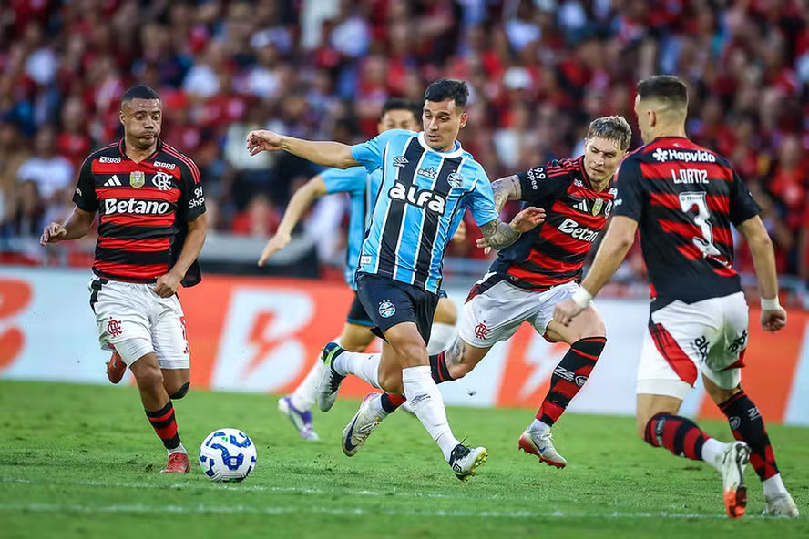

Flamengo 1x1 Grêmio
Após penâlti "polêmico" em um jogo difícil os Gaúchos saem com o empate do Rj se afastando do Z4
Após penâlti "polêmico" em um jogo difícil os Gaúchos saem com o empate do Rj se afastando do Z4

O Grêmio enfrenta o Mirassol na Arena no proximo duelo, mas o jogo não é facil,
o Mirassol vem de uma grande vitória sobre o Bahia, placar extenso 5x1 para a equipe paulista
o Grêmio já se provou conta o Flamengo, mas cada jogo é diferente, expectativa de casa cheia
os gremistas devem comparecer para apoiar o time do coração.